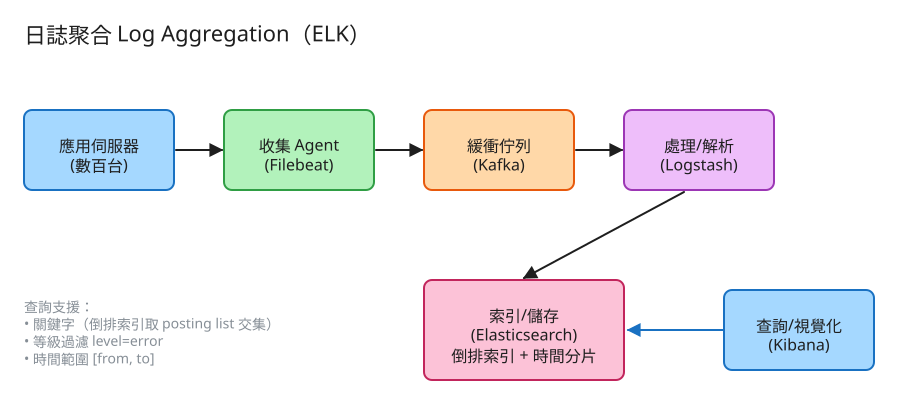

J 可觀測性 看故事就懂 輕鬆讀 25 分鐘
半夜兩點，網站掛了。你想知道「到底哪裡出錯」。錯誤的線索藏在 log（日誌）裡——但你有幾百台機器，每台都在不停吐 log。 你總不能一台一台 SSH 進去用肉眼翻吧？
日誌聚合就是解這個的：把所有機器的 log 集中到一個地方，讓你能像用 Google 一樣， 打個關鍵字「login failed」、勾「只看 error」、選「最近 15 分鐘」，一秒就撈出所有相關的 log。
很多人第一次看會想：「不就把每台的 log 抄到一個大檔案嗎？」——這想法漏掉了兩個會把系統壓垮的真正難關。
第一個難關就是這個：要能飛快地全文搜尋。解法是先幫每個字建一張「哪幾筆 log 提到這個字」的目錄——這叫倒排索引（就是圖書館的目錄卡）。
第二個難關更隱形：log 來得超快又超多（每秒幾十萬筆）。如果接收的人來不及處理，要嘛把產 log 的應用拖慢（很糟），要嘛 log 直接掉了（查不到）。 怎麼穩穩地接住這股洪流，是第二個難關。
💭 停一下：為什麼「把 log 全堆進一個大檔案，要找就整個掃一遍」在這題行不通？
別被「系統」嚇到。整件事其實就是闖 4 關，一關一關來：
幾百台機器各自在吐 log。我們在每台機器上放一個小幫手（叫 Filebeat），它專門盯著 log 檔，一有新的就往外送。
👉 好處：應用程式不用知道後端在哪，只管乖乖寫 log；要換後端、後端掛了，應用都不受影響。
收信員把信源源不絕送來，但總部（建索引的地方）處理速度有限。尖峰時信來得比處理得快怎麼辦？先丟進一個超大的排隊區（叫 Kafka）。
這個排隊區做兩件大事：削峰（洪峰先存著慢慢消化）+ 解耦（產 log 跟處理 log 互不拖累，後台掛了 log 也不會掉）。
從排隊區拿出 log，先整理乾淨（拆出時間、等級、服務、訊息等欄位），再幫每個字建目錄（倒排索引）。
這就是 Elasticsearch 在做的事：把 log 變成「可以一秒查到」的形狀。
最後給你一個搜尋框（叫 Kibana）：打關鍵字、勾等級、選時間範圍，一秒看到結果，還能畫成趨勢圖。
注意這裡有三個條件疊在一起：關鍵字（翻目錄）、等級（只要 error）、時間（只要這段）。三個一交集，就精準命中你要的那幾筆。
工程上的「取捨」聽起來很抽象。換個方式記：這個系統最怕三件事，每個設計都是為了避開某個「怕」。

✏️ 用 Excalidraw 開啟編輯（diagram.excalidraw）白話導讀，由左到右一路看：
看完上面，這些詞你其實都已經懂了，這裡只是把「工程術語 ↔ 白話」對起來，Part 2 會用到：
| 日誌 / log | 程式留下的「事件紀錄」：誰、何時、發生什麼（含等級與訊息） |
| 倒排索引 | 「字 → 哪幾筆 log 有它」的目錄卡，讓全文搜尋一翻就到 |
| tokenize（切詞） | 把一句訊息切成一個個字詞，才能逐字建目錄 |
| posting list | 某個字的目錄卡內容：列出「它出現在哪幾筆 log」 |
| 結構化日誌 | log 不只一坨文字，而是分好欄位（時間/等級/服務/訊息） |
| 等級 level | log 的嚴重度：debug < info < warn < error |
| 收集 Agent（Filebeat） | 每台機器上的收信員，自動撈 log 往外送 |
| 緩衝佇列（Kafka） | 超大排隊區：削峰、解耦、後台掛了也不掉信 |
| Logstash | 整理工：把雜亂 log 拆乾淨、打標、丟雜訊 |
| Elasticsearch | 建目錄 + 存放 + 查詢的引擎（圖書館本體） |
| Kibana | 搜尋框 + 儀表板（圖書館的查詢電腦） |
| 時間分桶 / rollover | 按時間把索引切成小箱子；過期整箱丟、舊箱搬冷庫 |
| 保留分層 hot/warm/cold | 新的放快又貴、舊的放慢又便宜、太舊就刪 |
| 高基數 | 某欄位的值「種類超多」（像每筆都不一樣的 request_id），亂建索引會爆 |
我們估幾個關鍵數字（數字不必背，重點是感受它的「形狀」）：
| 估什麼 | 大概數字 | 所以呢？ |
|---|---|---|
| 每秒進來多少 log | 500 台 × 200 行/秒 ≈ 10 萬/秒 | 洪流很大 → 一定要排隊區（Kafka）削峰 |
| 每天多大 | 每筆 ~500 bytes → 約 4 TB/日 | 量驚人 → 必須建目錄才查得動、要分層省成本 |
| 建了索引後多大 | 原始的 1.1~1.5 倍 ≈ 5~6 TB/日 | 目錄本身也佔空間 → 別什麼欄位都建索引 |
| 留 30 天要多少 | ≈ 180 TB | 不分層會燒爆預算 → hot/warm/cold + 該刪就刪 |
💭 停一下：每天才 4 TB 聽起來還好，為什麼成本會失控？
這題只要記住兩張「點餐單」：
① 攝取 log（內部，收集 agent 在用）
POST /api/logs
給我：{ logs: [ { 時間, 等級, 服務, 訊息 }, ... ] } ← 可一次送一批
我回：200「收了 3 筆，編號 101~103」一次送「一批」而不是一筆一筆，是因為 log 量太大，批次（bulk）才有效率（少了很多次來回的開銷）。
② 查 log（你在搜尋框打的）
GET /api/search?q=login failed&level=error&from=...&to=...
給我：關鍵字 + 等級 + 時間範圍
我回：{ 命中幾筆, [ {時間,等級,服務,訊息}, ... ] }注意這張單同時帶三種條件：關鍵字（翻目錄）、等級（精確過濾）、時間範圍。系統會先用最能「縮小範圍」的條件，再套其他過濾。
每筆 log 一列：編號、時間、等級(debug/info/warn/error)、來源服務、訊息。
把欄位拆好（結構化）的好處是：等級和時間可以精準過濾，訊息可以全文搜尋。
給定一個字，要能瞬間說出「它出現在哪幾筆 log」。長這樣：
"login" → [101, 102, 205]
"failed" → [102, 205, 318]不要把所有 log 塞進一個大箱子。按時間切成一個個小箱子（如「6/1 14 點這箱」）。 查「最近 15 分鐘」只要開相關的那幾箱；某天過期了，整箱丟掉就好（不用一筆一筆刪，超快）。
| 哪裡會塞車 | 怎麼拓寬 |
|---|---|
| 洪峰：log 一下湧太多，建索引的來不及 | 排隊區（Kafka）削峰：先全收進來慢慢消化；批次寫入 |
| 寫太慢：單一台建索引有上限 | 分片：把一個索引切成好幾塊，分給多台一起建 |
| 目錄爆炸：拿「每筆都不一樣」的欄位建索引 | 那種高基數欄位別建索引（只存、不做目錄） |
| 箱子太多：每小時×每服務都開新箱 | 合理設定多久開一箱、把小箱合併，用自動管理（ILM） |
| 查太慢：一次查超大時間範圍 | 只開相關時間箱、過濾條件做快取、限制回傳筆數 |
| 太貴：全部長期保留 + 全建索引 | 分層（新貴舊便宜）+ 不重要的 log 短期保留 + 到期刪 |
「Part 1 的三個怕」是核心取捨。這裡補幾個常被面試官追問的：
讀十遍不如玩一遍。這題有一個真的可以跑的小程式，讓你親眼看到「攝取 + 倒排索引查詢」：
# 啟動（在這題的 demo 資料夾裡）
cd demo
php -S localhost:8045 -t public
# 然後瀏覽器打開 http://localhost:8045login failed）、勾等級 error，看命中哪幾筆。login failed 時，注意結果是「兩個字都有」的那幾筆（取交集）。再加上等級過濾 error，看候選怎麼被進一步縮小——這就是「翻目錄 → 再過濾」的全過程。玩過 demo 了，來掀開引擎蓋看看「那幾關到底是哪幾段程式做的」。
好消息：核心邏輯都在一個小檔 LogIndex.php 裡，剛好對應前面講的工作。不用會 PHP，我把程式翻成白話、只留關鍵那幾行，看註解就懂。
要建目錄，得先把訊息切成一個個字，順便轉小寫（這樣 Login 和 login 算同一個字）。
function tokenize(訊息) {
小寫 = 把訊息全轉小寫
詞陣列 = 用「非字母數字」當刀，把它切開 // "GET /api 500" → [get, api, 500]
回傳 去掉重複後的詞陣列 // 同一字在一筆只記一次
}就這幾行，把一句話變成「可以逐字建目錄」的零件。轉小寫和去重是兩個小但重要的細節。
每攝取一筆 log，先存好它本身，再把它的每個字登記進目錄：
function ingest(等級, 服務, 訊息, 時間) {
編號 = 下一個流水號
log簿[編號] = { 編號, 時間, 等級, 服務, 訊息 } // ← 先把整筆存好
for (每個字 in tokenize(訊息 + " " + 服務)) { // 服務名也可被搜到
目錄[字].加入(編號) // ← 「這個字 → 加一筆它出現的 log」
}
回傳 編號
}關鍵就是那行 目錄[字].加入(編號)：每個字底下掛一串「它出現在哪幾筆」的清單（posting list）。目錄就是這樣一筆一筆長出來的。
這是全題的心臟。分三步：先翻目錄縮小範圍，再套等級和時間過濾，最後排序。
function search(關鍵字, 等級, 起始時間, 結束時間) {
// 第 1 步：翻目錄，多個字「取交集」(AND)
候選 = 全部 log
if (有關鍵字) {
for (每個字 in tokenize(關鍵字))
清單們.加入( 目錄[字] ) // 每個字一張目錄卡
候選 = 取所有清單的交集 // ← 每個字都出現的才留（login∩failed）
}
// 第 2 步：對候選套「等級 + 時間範圍」過濾
命中 = []
for (編號 in 候選) {
log = log簿[編號]
if (有指定等級 且 log.等級 != 等級) 跳過 // 等級不符 → 丟
if (log.時間 < 起始時間 或 > 結束時間) 跳過 // 不在時間範圍 → 丟
命中.加入(log)
}
// 第 3 步：時間新到舊排序
命中.依時間由新到舊排序()
回傳 命中
}看出順序了嗎？先用目錄（最能縮小範圍）取出候選，再套等級和時間過濾——而不是反過來把全部 log 拿來逐筆比。這個順序就是查詢能「秒級回應」的關鍵。
💭 停一下：為什麼要「先翻目錄取候選，再過濾等級/時間」，而不是先過濾等級/時間？
「取交集」是多關鍵字 AND 的核心。做法很直覺：數每個編號被幾張清單提到，被全部清單都提到的才留。
function 取交集(清單們) {
需要 = 清單的張數 // 例如查 2 個字 → 需要 = 2
for (清單 in 清單們)
for (編號 in 清單)
計數[編號]++ // 這個編號又被一張清單提到
回傳 所有「計數 == 需要」的編號 // ← 每張清單都有它 = 兩個字都出現
}查 login failed：login 的清單 [101,102,205]、failed 的清單 [102,205,318]，數一數只有 102、205 被兩張都提到 → 它們就是答案。簡單但這正是搜尋引擎的底層做法。
| 關卡（前面講的） | 哪個函式 | 關鍵那段 |
|---|---|---|
| 切詞 | tokenize() | 轉小寫 + 用非字母數字切開 |
| ③ 建目錄 | ingest() | 目錄[字].加入(編號) |
| ④ 查詢（翻目錄取交集） | search() | 取交集 → 套等級/時間過濾 → 排序 |
| 多關鍵字 AND | 取交集() | 數「被幾張清單提到」 |
👉 重點：真實系統會把「JSON 檔 + 迴圈取交集」換成「Elasticsearch（Lucene）+ 分片 + Kafka 緩衝」， 但上面這幾段判斷邏輯一字都不用改。所以讀懂這個小 demo，你就讀懂了這題的核心。
先不要看答案，自己用講給朋友聽的方式回答看看（講得出來才是真的懂）：
日誌聚合 = 幾百台機器 log 的 Google 搜尋引擎。
4 個關卡：① 每台收集（收信員 Filebeat）→ ② 緩衝排隊（Kafka 削峰、不掉信）→ ③ 整理 + 建目錄（倒排索引）→ ④ 關鍵字+等級+時間查（Kibana）。
3 個怕：怕查不動（先建倒排索引別硬掃）、怕掉 log/拖垮應用（Kafka 削峰解耦）、怕太貴存爆（分層保留 + 該刪就刪）。
工程細節一句話：成本 = 量 × 保留期 × 索引膨脹 → 用「點餐單(API)」批次攝取、查詢帶三條件 → 兩本筆記本（log 簿 + 目錄）+ 時間分箱 → 倒排索引先取候選再過濾等級/時間 → 找出塞車環節各自拓寬。
想看更精簡、面試速查用的版本？👉 前往完整版（同樣內容的工程速查格式）。